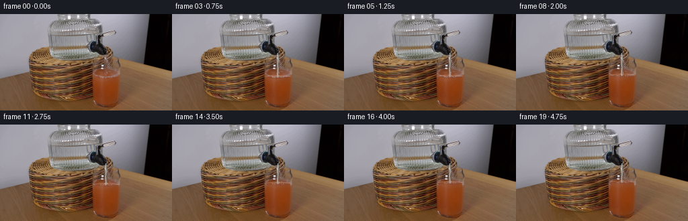
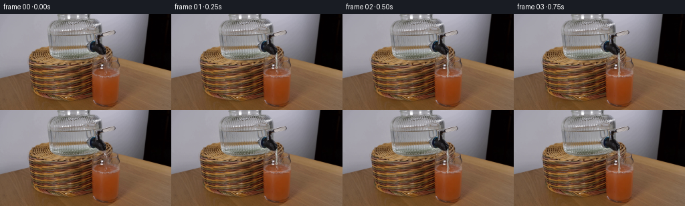
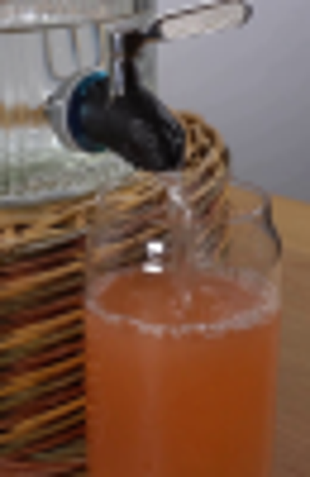
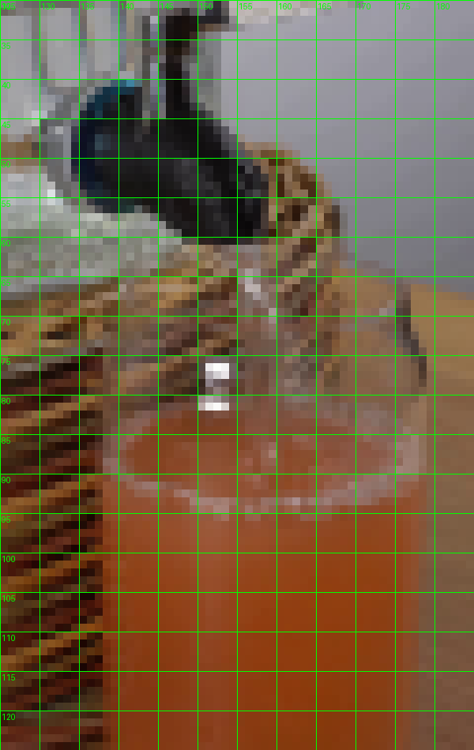
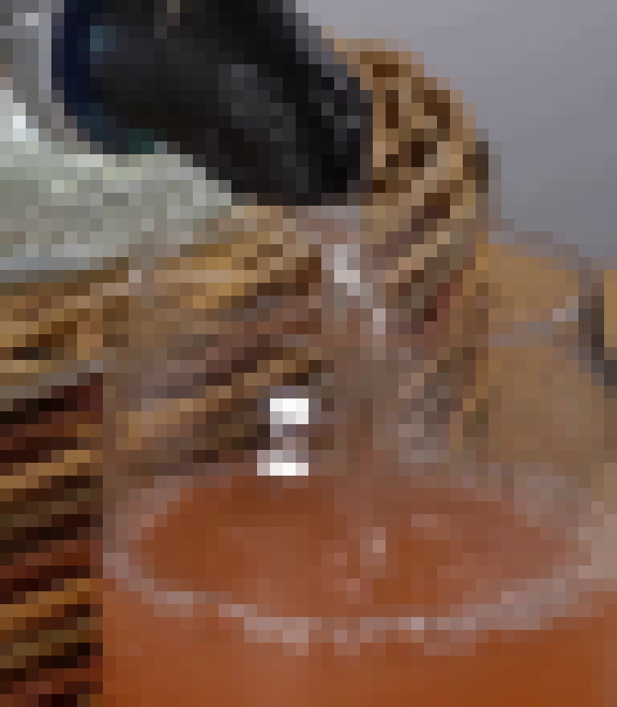
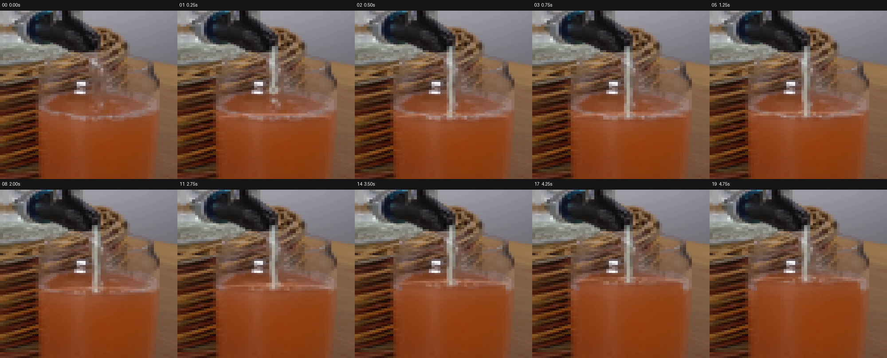
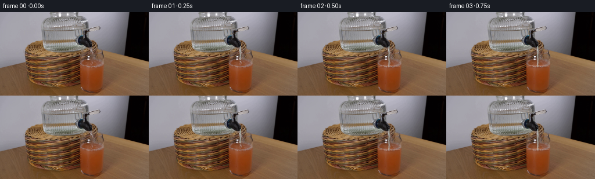

CODING AGENTS AS PIXEL WORLD MODELS
traex/GPT-5.6-Sol · 0184
点击播放 · 原生 RGB 像素
逐轮保存的候选
回放视频、检查图与代码变化。
每份候选均可单独播放。实际图片检查记录在下方工具轨迹中。
候选 01播放与检查图
点击播放 · 原生 RGB 像素

展开代码变化
--- 上一保存版本
+++ 本次保存版本
@@ -0,0 +1,217 @@
+"""Generate the locked-off grapefruit-juice filling demonstration.
+
+The source photograph is kept as the plate for every frame. Only the small
+area occupied by the glass and the water falling from the tap is changed.
+"""
+
+from pathlib import Path
+
+import cv2
+import numpy as np
+from PIL import Image, ImageDraw
+
+import artifact_io
+
+
+ROOT = Path(__file__).resolve().parent
+SCALE = 4
+N_FRAMES = 20
+
+
+def smoothstep(x):
+ x = np.clip(x, 0.0, 1.0)
+ return x * x * (3.0 - 2.0 * x)
+
+
+def glass_half_width(y):
+ """Approximate the inside wall of the photographed tumbler."""
+ # Narrow at the neck/surface, then almost cylindrical.
+ if y < 91:
+ return 17.0 + (y - 84.0) * 0.20
+ if y < 101:
+ return 18.4 + (y - 91.0) * 0.10
+ return 19.4 - max(0.0, y - 124.0) * 0.10
+
+
+def raised_juice(plate, level, phase):
+ """Move the photographed liquid texture upward behind the glass walls.
+
+ Sampling from the real juice below its original surface retains all of the
+ original illumination, glass highlights and photographic grain.
+ """
+ h, w = plate.shape[:2]
+ old_level = 94.0
+ rise = old_level - level
+ yy, xx = np.mgrid[0:h, 0:w].astype(np.float32)
+
+ # Very slight refractive movement, strongest near the agitated surface.
+ disturbance = np.exp(-((yy - level) / 11.0) ** 2)
+ map_x = (xx + 0.24 * disturbance * np.sin(0.72 * yy + phase)).astype(np.float32)
+ map_y = (yy + rise * np.clip((112.0 - yy) / 18.0, 0.0, 1.0)).astype(np.float32)
+ shifted = cv2.remap(
+ plate, map_x, map_y, cv2.INTER_LINEAR,
+ borderMode=cv2.BORDER_REFLECT_101,
+ )
+
+ # Soft, curved interior mask. The side walls themselves remain fixed.
+ hw = np.vectorize(glass_half_width)(yy)
+ cx = 158.0
+ side = np.clip((hw - np.abs(xx - cx)) / 1.25, 0.0, 1.0)
+ upper = np.clip((yy - (level - 0.7)) / 1.5, 0.0, 1.0)
+ lower = np.clip((118.0 - yy) / 7.0, 0.0, 1.0)
+ valid = ((yy >= level - 1.0) & (yy <= 118.0)).astype(np.float32)
+ alpha = side * upper * lower * valid
+
+ # The newly occupied band is fully liquid; lower down, taper the warp so
+ # the bottom and silhouette remain exactly registered with the plate.
+ alpha *= np.where(yy < 101.0, 0.94, np.clip((113.0 - yy) / 12.0, 0.0, 0.82))
+ out = plate.astype(np.float32) * (1.0 - alpha[..., None]) + shifted.astype(np.float32) * alpha[..., None]
+
+ # Water progressively dilutes the upper few millimetres to a softer pink.
+ dilute = np.exp(-np.maximum(0.0, yy - level) / 7.0)
+ dilute *= side * valid * min(1.0, rise / 5.5) * 0.075
+ tint = np.array([183.0, 106.0, 74.0], dtype=np.float32)
+ out = out * (1.0 - dilute[..., None]) + tint * dilute[..., None]
+ return np.clip(out, 0, 255).astype(np.uint8)
+
+
+def rgba_layer():
+ return Image.new("RGBA", (256 * SCALE, 144 * SCALE), (0, 0, 0, 0))
+
+
+def pts_scaled(points):
+ return [(int(round(x * SCALE)), int(round(y * SCALE))) for x, y in points]
+
+
+def composite(frame, layer):
+ base = Image.fromarray(frame).convert("RGBA")
+ return np.asarray(Image.alpha_composite(base, layer.resize((256, 144), Image.Resampling.LANCZOS)).convert("RGB"))
+
+
+def draw_surface(frame, level, fi, flow):
+ """Draw the liquid meniscus, impact dimple, bubbles, and tiny ripples."""
+ layer = rgba_layer()
+ d = ImageDraw.Draw(layer, "RGBA")
+ S = SCALE
+ phase = fi * 1.71
+
+ # Rear part of the grapefruit-coloured meniscus.
+ box = [139 * S, (level - 2.0) * S, 177 * S, (level + 2.4) * S]
+ d.arc(tuple(map(int, box)), 182, 357, fill=(236, 171, 142, 104), width=1 * S)
+ d.arc(tuple(map(int, box)), 6, 177, fill=(111, 49, 24, 48), width=1 * S)
+
+ if flow:
+ # The stream makes a shallow dimple and two short-lived elliptical
+ # wavelets. Their phase advances at the constant 4 fps cadence.
+ impact_x = 157.6 + 0.35 * np.sin(phase)
+ for k in range(2):
+ age = (fi * 0.73 + k * 0.49) % 1.0
+ rx = 3.0 + age * 10.5
+ ry = 0.55 + age * 1.15
+ a = int(82 * (1.0 - age) ** 1.4)
+ bb = [(impact_x - rx) * S, (level - ry) * S,
+ (impact_x + rx) * S, (level + ry) * S]
+ d.arc(tuple(map(int, bb)), 192, 350, fill=(244, 194, 169, a), width=max(2, S // 2))
+ d.arc(tuple(map(int, bb)), 8, 170, fill=(104, 50, 31, a // 2), width=max(2, S // 2))
+
+ # Pale impact patch and minute foam bubbles riding on the surface.
+ r = 2.2 + 0.35 * np.sin(phase * 1.8)
+ d.ellipse((int((impact_x-r)*S), int((level-.65)*S),
+ int((impact_x+r)*S), int((level+.75)*S)),
+ fill=(229, 175, 151, 45))
+ bubbles = [(-7.2, 0.35, 0.48), (-4.1, -0.18, 0.34),
+ (4.8, 0.24, 0.38), (8.6, -0.08, 0.30)]
+ for j, (dx, dy, radius) in enumerate(bubbles):
+ wobble = 0.4 * np.sin(phase * 0.65 + j * 2.1)
+ x = impact_x + dx + wobble
+ y = level + dy
+ rr = radius * S
+ d.ellipse((int(x*S-rr), int(y*S-rr), int(x*S+rr), int(y*S+rr)),
+ outline=(245, 207, 190, 105), width=max(1, S // 2))
+ return composite(frame, layer)
+
+
+def draw_water(frame, level, fi):
+ """Add a narrow transparent water stream from the existing tap."""
+ layer = rgba_layer()
+ d = ImageDraw.Draw(layer, "RGBA")
+ S = SCALE
+ phase = fi * 1.37
+
+ # Frame 01 catches the leading stream in flight; from frame 02 it has
+ # reached the drink and remains continuous.
+ if fi == 1:
+ end_y = 79.5
+ else:
+ end_y = level + 0.2
+
+ points = []
+ y0 = 58.0
+ for y in np.linspace(y0, end_y, max(5, int((end_y-y0)*1.3))):
+ # Fine deterministic shimmer without changing the stream's direction.
+ x = 157.25 + 0.28*np.sin(y*0.43 + phase) + 0.08*np.sin(y*1.31-phase)
+ points.append((x, y))
+ p = pts_scaled(points)
+
+ # A dim refractive edge and a cool transparent core. At this size a
+ # two-pixel column reads naturally without hiding the photographed scene.
+ d.line(p, fill=(55, 65, 61, 64), width=3*S, joint="curve")
+ d.line(p, fill=(188, 207, 204, 138), width=2*S, joint="curve")
+ highlight = [(x-0.45, y) for x, y in points]
+ d.line(pts_scaled(highlight), fill=(241, 246, 239, 148), width=max(2, S//2), joint="curve")
+
+ # Bright travelling glints reveal that the column is moving, not a rod.
+ for n in range(4):
+ gy = y0 + ((fi*5.7 + n*9.3) % max(10.0, end_y-y0))
+ if gy < end_y - 1.0:
+ gx = 157.2 + 0.25*np.sin(gy*0.43 + phase)
+ d.line(pts_scaled([(gx-.45, gy-1.0), (gx-.45, gy+1.25)]),
+ fill=(250, 252, 246, 105), width=max(2, S//2))
+
+ if fi == 1:
+ # Rounded leading drop and a smaller separated satellite.
+ d.ellipse((int(155.8*S), int(78.0*S), int(159.0*S), int(82.0*S)),
+ fill=(188, 207, 203, 137), outline=(236, 242, 237, 150), width=2)
+ d.ellipse((int(156.7*S), int(84.4*S), int(158.5*S), int(86.7*S)),
+ fill=(201, 215, 211, 119))
+ else:
+ # Small splash shoulders at impact, deliberately restrained.
+ ix = 157.6 + 0.3*np.sin(phase)
+ d.arc((int((ix-3.2)*S), int((level-2.4)*S),
+ int((ix+3.2)*S), int((level+1.0)*S)),
+ 200, 337, fill=(239, 218, 205, 112), width=max(2, S//2))
+ for side in (-1, 1):
+ x = ix + side*(2.2 + 0.25*np.sin(phase+side))
+ y = level - 1.2 - 0.45*np.sin(phase*1.4+side)
+ rr = 0.32*S
+ d.ellipse((int(x*S-rr), int(y*S-rr), int(x*S+rr), int(y*S+rr)),
+ fill=(239, 227, 216, 122))
+
+ return composite(frame, layer)
+
+
+def generate():
+ plate = np.asarray(Image.open(ROOT / "first_frame.png").convert("RGB"), dtype=np.uint8)
+ frames = [plate.copy()]
+ for fi in range(1, N_FRAMES):
+ # The first falling column has not yet hit; thereafter the level rises
+ # steadily, with a tiny ease-in as the flow establishes itself.
+ progress = max(0.0, (fi - 1.25) / (N_FRAMES - 1.25))
+ rise = 8.2 * (0.15 * progress + 0.85 * smoothstep(progress))
+ level = 94.0 - rise
+ frame = raised_juice(plate, level, fi * 0.81)
+ frame = draw_surface(frame, level, fi, flow=(fi >= 2))
+ frame = draw_water(frame, level, fi)
+ frames.append(frame)
+ return np.stack(frames).astype(np.uint8)
+
+
+if __name__ == "__main__":
+ result = generate()
+ assert result.shape == (20, 144, 256, 3)
+ assert result.dtype == np.uint8
+ # Contractual identity check for the supplied first frame.
+ source = np.asarray(Image.open(ROOT / "first_frame.png").convert("RGB"), dtype=np.uint8)
+ assert np.array_equal(result[0], source)
+ artifact_io.save(result, ROOT)
+
候选 02播放与检查图
点击播放 · 原生 RGB 像素


展开代码变化
--- 上一保存版本
+++ 本次保存版本
@@ -199,8 +199,12 @@
progress = max(0.0, (fi - 1.25) / (N_FRAMES - 1.25))
rise = 8.2 * (0.15 * progress + 0.85 * smoothstep(progress))
level = 94.0 - rise
- frame = raised_juice(plate, level, fi * 0.81)
- frame = draw_surface(frame, level, fi, flow=(fi >= 2))
+ if fi == 1:
+ # The leading edge is still in the air, so the drink is unchanged.
+ frame = plate.copy()
+ else:
+ frame = raised_juice(plate, level, fi * 0.81)
+ frame = draw_surface(frame, level, fi, flow=True)
frame = draw_water(frame, level, fi)
frames.append(frame)
return np.stack(frames).astype(np.uint8)
候选 03播放与检查图
点击播放 · 原生 RGB 像素

展开代码变化
代码未变化；重新保存了产物。
可观测工具轨迹
实际执行的命令与返回图片。
命令 1exit 0
/bin/bash -lc "cat prompt.txt && printf '\\n--- GENERATION_RULES ---\\n' && cat GENERATION_RULES.md"
命令 2exit 0
/bin/bash -lc "find . -maxdepth 2 -type f -printf '%p\\n' | sort && printf '\\n--- TOOL VERSIONS ---\\n' && (ffmpeg -version | head -n 2 || true) && (python3 --version || true)"
命令 3exit 0
/bin/bash -lc 'cat artifact_io.py'
命令 4exit 0
/bin/bash -lc "python3 - <<'PY'
mods=['PIL','numpy','cv2','imageio','scipy']
for m in mods:
try:
x=__import__(m); print(m, getattr(x,'__version__','ok'))
except Exception as e: print(m,'NO',e)
from PIL import Image
im=Image.open('first_frame.png'); print(im.mode, im.size)
PY"命令 5exit 0
/bin/bash -lc "python3 - <<'PY'
from PIL import Image
im=Image.open('first_frame.png')
im.crop((120,25,185,125)).resize((520,800)).save('.tmp/crop.png')
PY"命令 6exit 0
/bin/bash -lc "python3 - <<'PY'
from PIL import Image
import numpy as np
im=np.array(Image.open('first_frame.png'))
pts=[(155,90),(155,94),(155,100),(160,110),(145,110),(170,90),(145,85),(160,80),(154,65),(154,75)]
for x,y in pts: print((x,y), im[y,x].tolist())
for reg in [(145,96,173,130),(142,84,176,92),(150,64,165,82)]:
x1,y1,x2,y2=reg;a=im[y1:y2,x1:x2];print(reg,np.mean(a,axis=(0,1)),np.min(a,axis=(0,1)),np.max(a,axis=(0,1)))
PY"命令 7exit 0
/bin/bash -lc "python3 - <<'PY'
from PIL import Image,ImageDraw
im=Image.open('first_frame.png').crop((125,30,185,125)).resize((600,950),Image.Resampling.NEAREST)
d=ImageDraw.Draw(im)
# grid every 5 source pixels
for x in range(0,61,5):
d.line((x*10,0,x*10,950),fill=(0,255,0),width=1)
d.text((x*10+2,2),str(x+125),fill=(0,255,0))
for y in range(0,96,5):
d.line((0,y*10,600,y*10),fill=(0,255,0),width=1)
d.text((2,y*10+2),str(y+30),fill=(0,255,0))
im.save('.tmp/grid.png')
PY"命令 8exit 0
/bin/bash -lc "python3 - <<'PY'
from PIL import Image
import numpy as np
im=np.array(Image.open('first_frame.png'))
for x in [145,150,155,160,165,170,175]:
print('\\nx',x)
for y in range(70,101):
print(y, '%3d,%3d,%3d'%tuple(im[y,x]), end=' ')
if (y-69)%5==0:print()
PY"命令 9exit 0
/bin/bash -lc "python3 - <<'PY'
from PIL import Image
im=Image.open('first_frame.png')
for box,name in [((130,45,178,100),'spout'),((135,55,180,102),'glass')]:
im.crop(box).resize(((box[2]-box[0])*16,(box[3]-box[1])*16),Image.Resampling.NEAREST).save('.tmp/'+name+'.png')
PY"命令 10exit 1
/bin/bash -lc "python3 generate.py && python3 - <<'PY'
import numpy as np
from PIL import Image
z=np.load('pixels.npz')['pixels']
print('pixels',z.shape,z.dtype)
f=np.stack([np.array(Image.open(f'frames/{i:02d}.png')) for i in range(20)])
s=np.array(Image.open('first_frame.png'))
print('frames',f.shape,f.dtype,'frame0 identical',np.array_equal(f[0],s))
for i in [1,2,5,10,15,19]:
d=np.abs(f[i].astype(int)-s.astype(int)); changed=np.any(d,2)
ys,xs=np.where(changed)
print(i,'changed',changed.sum(),'bbox',(xs.min(),ys.min(),xs.max(),ys.max()),'mean delta',d[changed].mean().round(2),'max',d.max())
PY"命令 11exit 0
/bin/bash -lc "python3 generate.py && python3 - <<'PY'
import numpy as np
from PIL import Image
z=np.load('pixels.npz')['pixels']
print('pixels',z.shape,z.dtype)
f=np.stack([np.array(Image.open(f'frames/{i:02d}.png')) for i in range(20)])
s=np.array(Image.open('first_frame.png'))
print('frames',f.shape,f.dtype,'frame0 identical',np.array_equal(f[0],s))
for i in [1,2,5,10,15,19]:
d=np.abs(f[i].astype(int)-s.astype(int)); changed=np.any(d,2)
ys,xs=np.where(changed)
print(i,'changed',changed.sum(),'bbox',(xs.min(),ys.min(),xs.max(),ys.max()),'mean delta',d[changed].mean().round(2),'max',d.max())
PY"命令 12exit 0
/bin/bash -lc "python3 - <<'PY'
from PIL import Image,ImageDraw
ids=[0,1,2,3,5,8,11,14,17,19]
w,h=100*4,95*4
out=Image.new('RGB',(w*5,(h+24)*2),(20,20,20));d=ImageDraw.Draw(out)
for k,i in enumerate(ids):
im=Image.open(f'frames/{i:02d}.png').crop((125,40,185,125)).resize((w,h),Image.Resampling.NEAREST)
x=(k%5)*w;y=(k//5)*(h+24);out.paste(im,(x,y+24));d.text((x+5,y+5),f'{i:02d} {i/4:.2f}s',fill='white')
out.save('.tmp/detail_sheet.png')
PY"命令 13exit 0
/bin/bash -lc "python3 generate.py && python3 - <<'PY'
from pathlib import Path
from PIL import Image
import numpy as np
src=np.asarray(Image.open('first_frame.png').convert('RGB'))
fs=np.stack([np.asarray(Image.open(f'frames/{i:02d}.png').convert('RGB')) for i in range(20)])
assert fs.shape==(20,144,256,3) and fs.dtype==np.uint8
assert np.array_equal(fs[0],src)
assert len(list(Path('frames').glob('*.png')))==20
z=np.load('pixels.npz')['pixels']; assert z.shape==(144,256,20) and z.dtype==np.uint32
mask=np.ones((144,256),bool);mask[54:120,136:180]=False
assert np.array_equal(fs[:,mask],np.broadcast_to(src[mask],fs[:,mask].shape))
print('PASS: 20 RGB frames, 256x144, frame 00 exact, fixed exterior plate')
print('artifacts:',', '.join(x.name for x in [Path('pixels.npz'),Path('index.html'),Path('inspection.png'),Path('transition_check.png')]))
print('final action pixels changed:',np.any(fs[-1]"'!=src,axis=2).sum())
print('"'generate.py runnable; output bytes:',Path('pixels.npz').stat().st_size)
PY"视觉工具实际返回图片 1

视觉工具实际返回图片 2

视觉工具实际返回图片 3

视觉工具实际返回图片 4

视觉工具实际返回图片 5

视觉工具实际返回图片 6

视觉工具实际返回图片 7

视觉工具实际返回图片 8

保存候选 3 份；完成命令 13 次；可验证图片返回 8 张。原始 API 响应与完整日志保留在本地。